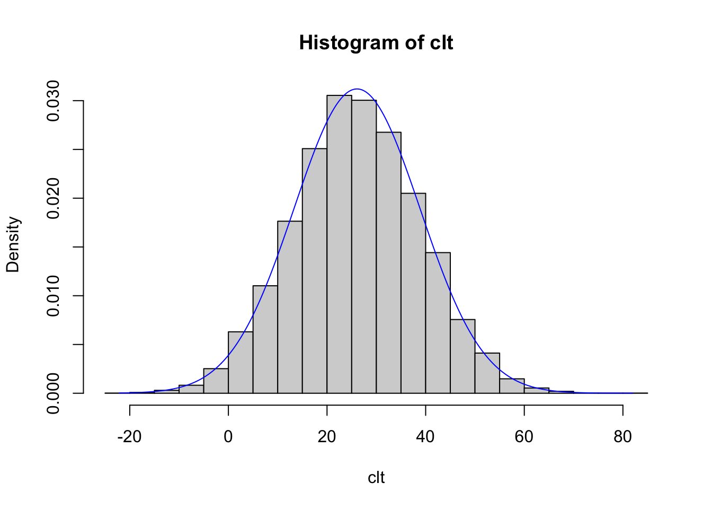

Chapter 11 Simulating data
I’ve just begun to explore R, and I realize that many of my questions could be improved with example data. Generating this kind of data takes practice, though.
Some good websites: https://clayford.github.io/dwir/dwr_12_generating_data.html
https://cran.r-project.org/web/packages/simstudy/vignettes/simstudy.html
https://aosmith.rbind.io/2018/08/29/getting-started-simulating-data/
Also, remember that R packages have a lot of great data.
11.1 Sample()
Starting with Clayford’s nice (and long page):
## [1] 4 5 1 2 3## [1] 10 12 18 18 16 9# bootstrap resampling: sampling the same number of items WITH replacement. The bootstrap method is a resampling technique used to estimate statistics on a population by sampling a dataset with replacement.
sample(dat, replace = TRUE) ## [1] 9 10 18 18 18 10## [1] "RI" "LA" "FL" "MD" "TX" "WV" "AK" "NE" "WA" "AZ"## [1] 1# We can simulate the roll of a die 100 times by setting size=100 and
# replace=TRUE
sample(1:6, size=100, replace=TRUE)## [1] 5 6 3 1 5 1 5 1 3 1 1 3 3 4 5 4 4 5 6 4 2 1 5 6 6 1 3 3 4 1 4 5 4 6 6 4 5
## [38] 6 4 6 1 4 1 3 4 1 1 5 4 3 1 2 5 5 2 2 1 3 5 6 4 4 1 3 4 3 4 5 2 2 4 2 5 4
## [75] 4 5 4 3 4 1 4 1 1 1 5 6 1 4 5 5 5 5 2 3 6 2 2 5 4 1# sample produces a vector, so we can manipulate it as we would any other
# vector. For example, simulate a 100 die rolls and tally up the totals using
# table() and prop.table():
table(sample(1:6, size=100, replace=TRUE))##
## 1 2 3 4 5 6
## 8 27 19 17 19 10##
## 1 2 3 4 5 6
## 0.15 0.11 0.19 0.19 0.14 0.22##
## AK AL AR AZ CA CO CT DE FL GA HI IA ID IL IN KS KY LA MA MD ME MI MN MO MS MT
## 19 14 14 24 23 19 28 17 25 20 25 23 21 23 16 21 17 10 18 20 19 30 24 19 21 23
## NC ND NE NH NJ NM NV NY OH OK OR PA RI SC SD TN TX UT VA VT WA WI WV WY
## 18 23 18 23 10 18 19 13 19 23 15 25 26 17 18 19 20 24 19 22 17 14 28 19##
## AK AL AR AZ CA CO CT DE FL GA HI IA ID
## 0.016 0.021 0.024 0.013 0.018 0.023 0.025 0.020 0.030 0.015 0.026 0.020 0.024
## IL IN KS KY LA MA MD ME MI MN MO MS MT
## 0.029 0.027 0.024 0.020 0.017 0.021 0.022 0.021 0.021 0.025 0.016 0.015 0.015
## NC ND NE NH NJ NM NV NY OH OK OR PA RI
## 0.018 0.018 0.014 0.018 0.013 0.022 0.021 0.022 0.022 0.017 0.022 0.016 0.017
## SC SD TN TX UT VA VT WA WI WV WY
## 0.016 0.018 0.017 0.028 0.021 0.019 0.011 0.019 0.020 0.025 0.018##
## Attaching package: 'magrittr'## The following object is masked from 'package:purrr':
##
## set_names## The following object is masked from 'package:tidyr':
##
## extract## .
## 1 2 3 4 5 6
## 0.16 0.19 0.13 0.14 0.21 0.17## [1] 9## [1] 4# simulate rolling two dice 100 times by updating the sample "space"
sample(2:12, size=100, replace=TRUE)## [1] 3 12 5 5 4 4 4 6 3 9 2 10 12 8 8 4 2 8 9 7 8 8 9 12 8
## [26] 8 12 6 11 2 5 2 8 3 3 3 8 4 4 5 4 9 4 11 4 7 7 4 5 2
## [51] 9 7 5 5 12 3 7 2 3 6 6 6 2 11 6 6 8 4 12 12 8 10 3 11 6
## [76] 12 7 11 6 3 9 2 11 3 9 10 5 9 4 3 9 4 12 8 5 5 10 7 9 6## [1] 0.10111.2 replicate()
We can use the replicate() function to replicate samples. The replicate() function allows you to replicate an expression as many times as you specify. The basix syntax is replicate(n, expr) where n is the number of replications and expr is the expression you want to replicate.
# Roll 2 dice and keep the largest number, 10,000 times:
rolls <- replicate(n=1e5, expr = max(sample(1:6, size=2, replace=TRUE)))
# calculate proportions:
prop.table(table(rolls))## rolls
## 1 2 3 4 5 6
## 0.02813 0.08285 0.13635 0.19458 0.25246 0.30563
11.3 sample() revisited
The sample function also has a prob argument that allows you to assign probabilities to your items. For example to simulate the flip of a loaded coin, with Tails having probability 0.65:
## flips
## H T
## 0.323 0.677Coins are nice, but we can also use sample to generate practical data, for example males and females. A web site says UVa has 11,632 female students and 10,353 male students as of Fall 2015.
## [1] 0.53 0.47Note how elegantly this answers a basic question. Nice!
We can generate a fake random sample of 500 UVa students with a weighted sampling scheme like so:
students <- sample(c("female","male"), 500, replace=TRUE, prob = c(0.53, 0.47))
prop.table(table(students))## students
## female male
## 0.462 0.538When used with subsetting brackets, sample() can be used to create training and test sets. For example, say we want to build some sort of predictive model using our training data. We may want to use half our data to build the model and then use the other half to evaluate its performance.
train <- sample(nrow(iris), size= nrow(iris)/2)
# train is a random sample of numbers from 1 - 365. We can treat these like row numbers.
irisTrain <- iris[train,]
irisTest <- iris[-train,]
# confirm no intersection
dplyr::intersect(irisTrain, irisTest) ## [1] Sepal.Length Sepal.Width Petal.Length Petal.Width Species
## <0 rows> (or 0-length row.names)11.4 generating fixed levels ————————————————-
Often generating data means creating a series of fixed levels, such as 10 males and 10 females. The rep() function can be useful for this. Below we replicate 10 each of “M” and “F”:
## [1] "M" "M" "M" "M" "M" "M" "M" "M" "M" "M" "F" "F" "F" "F" "F" "F" "F" "F" "F"
## [20] "F"## [1] "M" "F" "M" "F" "M" "F" "M" "F" "M" "F" "M" "F" "M" "F" "M" "F" "M" "F" "M"
## [20] "F"## [1] "M" "F" "M" "F" "M" "F" "M" "F" "M" "F" "M" "F" "M" "F" "M"## [1] "M" "F" "M" "F" "M" "F" "M" "F" "M" "F" "M" "F" "M" "F" "M"# Notice that all these generated a character vector. To use as a "factor", we would need to wrap it in the factor() function.
factor(rep(c("M","F"), each=10))## [1] M M M M M M M M M M F F F F F F F F F F
## Levels: F M# A function specifically for creating factors is the gl() function. gl =
# "generate levels". Below we generate a factor with 2 levels of 10 each and
# labels of "M" and "F". Notice the result is a factor.
gl(n = 2, k = 10, labels = c("M","F"))## [1] M M M M M M M M M M F F F F F F F F F F
## Levels: M F# A more common occurence is combinations of fixed levels, say gender,
# education, and status. A function that helps create every combination of
# levels is expand.grid(). Below we generate every combination of the levels
# provided for gender, education, and status. Notice the first factors vary
# fastest.
expand.grid(gender=c("M","F"),
education=c("HS","College","Advanced"),
status=c("Single","Married","Divorced","Widowed"))## gender education status
## 1 M HS Single
## 2 F HS Single
## 3 M College Single
## 4 F College Single
## 5 M Advanced Single
## 6 F Advanced Single
## 7 M HS Married
## 8 F HS Married
## 9 M College Married
## 10 F College Married
## 11 M Advanced Married
## 12 F Advanced Married
## 13 M HS Divorced
## 14 F HS Divorced
## 15 M College Divorced
## 16 F College Divorced
## 17 M Advanced Divorced
## 18 F Advanced Divorced
## 19 M HS Widowed
## 20 F HS Widowed
## 21 M College Widowed
## 22 F College Widowed
## 23 M Advanced Widowed
## 24 F Advanced Widowed# Notice that creates a data frame that we can save:
DF <- expand.grid(gender=c("M","F"),
education=c("HS","College","Advanced"),
status=c("Single","Married","Divorced","Widowed"))
class(DF)## [1] "data.frame"Or imagine an experiment where 3 people throw 3 different kinds of paper airplanes, made of 3 paper types (3x3 = 9 planes), throwing each plane 8 times.
schedule <- expand.grid(thrower=c("Clay","Rod","Kevin"),
paper=c("18", "20", "24"),
design=c("a","b","c"),
rep=1:8)
# Randomize and drop the rep column. The sample(nrow(schedule)) code scrambles the numbers 1 through 216, which I then use to randomly shuffle the schedule of throws.
k <- sample(nrow(schedule))
schedule <- schedule[k,1:3]
head(schedule, n = 10)## thrower paper design
## 104 Rod 20 c
## 146 Rod 18 b
## 139 Clay 20 a
## 79 Clay 24 c
## 10 Clay 18 b
## 94 Clay 20 b
## 112 Clay 20 a
## 183 Kevin 18 c
## 196 Clay 24 a
## 35 Rod 24 a# output to csv file for logging "distance flown" data
write.csv(schedule, file="throwLog.csv", row.names=FALSE)
rm(k, schedule)This is a great way to set up an experiment, but I’d like to also add data for the throw, based on interesting distributions (normal, etc.). How would I generate samples for each contestant that was based on slightly different distributions?
What sort of distribution? See this page to get a quick refresher on common distributions: https://www.analyticsvidhya.com/blog/2017/09/6-probability-distributions-data-science/.
Note also that ?distributions gives you the distributions in {stats}. Persevere for a time.
11.5 generating numerical sequences
## [1] 0 2 4 6 8 10## [1] 0.0 0.2 0.4 0.6 0.8 1.0 1.2 1.4 1.6 1.8 2.0 2.2 2.4 2.6 2.8
## [16] 3.0 3.2 3.4 3.6 3.8 4.0 4.2 4.4 4.6 4.8 5.0 5.2 5.4 5.6 5.8
## [31] 6.0 6.2 6.4 6.6 6.8 7.0 7.2 7.4 7.6 7.8 8.0 8.2 8.4 8.6 8.8
## [46] 9.0 9.2 9.4 9.6 9.8 10.0## [1] 1000 900 800 700 600 500 400 300 200 100 0# The seq() function has a length.out argument that allows you to specify the
# size of the vector you want to create. It automatically calculates the
# increment. We usually just abbreviate to length
seq(1, 10, length = 30)## [1] 1.000000 1.310345 1.620690 1.931034 2.241379 2.551724 2.862069
## [8] 3.172414 3.482759 3.793103 4.103448 4.413793 4.724138 5.034483
## [15] 5.344828 5.655172 5.965517 6.275862 6.586207 6.896552 7.206897
## [22] 7.517241 7.827586 8.137931 8.448276 8.758621 9.068966 9.379310
## [29] 9.689655 10.000000## [1] 1 2 3 4 5 6 7 8 9 10## [1] 10 9 8 7 6 5 4 3 2 1 0 -1 -2 -3 -4 -5 -6 -7 -8
## [20] -9 -10# When used with factors, the colon operator generates an interaction factor:
f1 <- gl(n = 2, k = 3); f1## [1] 1 1 1 2 2 2
## Levels: 1 2## [1] a a b b c c
## Levels: a b c## [1] 1:a 1:a 1:b 2:b 2:c 2:c
## Levels: 1:a 1:b 1:c 2:a 2:b 2:cThe last step seems akin to perfectly shuffling two decks of cards (the decks must be of equal length).
11.6 seq_along() and seq_len().
seq_along() returns the indices of a vector while seq_len(n) returns an integer vector of 1:n.
## [1] 1 2 3 4 5 6 7 8 9 10 11 12 13 14 15 16 17 18 19 20 21## [1] 1 2 3 4 5 6 7 8 9 10 11 12 13 14 15 16 17 18 19 20 21 22 23 24 25
## [26] 26 27 28 29 30 31 32 33 34 35 36 37 38 39 40 41 42 43 44 45 46 47 48 49 50## [1] 1 2 3 4 5 6 7 8 9 10 11 1211.7 generating random data from a probability distribution
A central idea in inferential statistics is that the distribution of data can often be approximated by a theoretical distribution. R provides functions for working with several well-known theoretical distributions, including the ability to generate data from those distributions. A common one is the rnorm() function which generates data from a Normal distribution.
In R, the functions for theoretical distributions take the form of dxxx, pxxx, qxxx and rxxx.
- dxxx is for the probability density/mass function (dnorm)
- pxxx is for the cumulative distribution function (pnorm)
- qxxx is for the quantile function (qnorm)
- rxxx is for random variate generation (rnorm)
For random variate generation we’re interested in the rxxx variety.
11.8 Normal distribution:
## [1] 101.27360 88.61725 112.49156 99.30521 103.86910 103.87714 100.71628
## [8] 100.07492 102.82459 108.6093611.9 Binomial distribution:
# 10 random draws from b(1,0.5)
# AKA, 10 coin flips (size is the number of trials)
rbinom(n = 10, size = 1, prob = 0.5)## [1] 1 0 1 0 1 1 1 0 1 1# 10 random draws from b(1,0.8)
# AKA, 10 coin flips with a coin loaded Heads (or Tails) 80% of time
rbinom(n = 10, size = 1, prob = 0.8)## [1] 0 1 1 1 1 1 1 1 1 1# 10 random draws from b(10,0.5)
# AKA, 10 results of 10 coin flips
rbinom(n = 10, size = 10, prob = 0.5)## [1] 9 4 8 6 2 6 5 4 4 5# We can use a binomial distribution to simulate dichotmous answers such as
# Yes/No or success/fail. Simulate a vector of responses where respondents are 65% likely to say Yes (1) versus No (0)
rbinom(n = 10, size = 1, prob = 0.65)## [1] 1 1 0 1 1 1 1 1 0 1## [1] "Y" "Y" "Y" "Y" "Y" "Y" "Y" "Y" "N" "Y"11.10 Uniform distribution
## [1] 50.34837 88.96280 18.03323 17.74219 99.83278 47.54181 63.35148 10.48299
## [9] 52.38249 78.17431# A uniform distribution can be good for random sampling. Let's say we want to sample about 10% of iris data:
k <- runif(nrow(iris),0,1) # [0,1] interval is default
sbSamp <- iris[k < 0.1, ] # sample about 10% of rows
dim(sbSamp)## [1] 21 5# dplyr does this as well without the need for runif; and it's precise in its
# sampling fraction.
sbSamp <- dplyr::sample_frac(iris, 0.1) # sample exactly 10% of rows
dim(sbSamp)## [1] 15 511.11 Sampling from multiple distributions (building in a “difference”)
The arguments to rxxx functions can take vectors! This means we can use one function call to generate draws from multiple distributions.
## [1] 2.602207 64.321100 2.032922 121.054752 3.694822 148.521727
## [7] 6.572839 106.641653 -1.274637 112.095525# 30 random draws, 10 each from N(10,4), N(90,4) and N(400,4)
rnorm(30, mean = rep(c(10,90,400),each=10), sd = 4)## [1] 13.442189 11.814276 8.042744 11.032804 6.725487 7.644664
## [7] 15.005589 7.799846 9.824663 2.408001 91.457085 86.801938
## [13] 93.875747 87.623842 80.591457 97.105845 85.647415 87.239971
## [19] 90.069110 95.125852 400.054585 405.090048 396.088488 412.025435
## [25] 398.472211 403.735081 402.763459 401.535412 402.840150 397.813341# 100 random draws, 50 each from b(5,0.5) and b(50,0.5)
rbinom(n = 100, size = rep(c(5,50),each=50), prob = 0.5)## [1] 3 3 2 2 1 5 2 3 3 2 0 2 3 4 3 2 3 1 2 1 2 2 4 3 4
## [26] 4 1 3 3 4 4 1 0 3 2 3 3 3 4 5 3 0 3 2 1 2 2 5 1 1
## [51] 26 26 23 25 24 25 20 22 29 24 28 23 22 24 25 26 23 27 25 30 28 20 27 22 22
## [76] 24 31 28 21 25 31 21 19 26 20 24 24 31 33 23 26 25 26 24 25 19 25 23 25 24# Combined with matrix(), one can generate "multiple" random samples from a
# distribution. For example, draw 5 random samples of size 10 from a N(10,1):
matrix(rnorm(10*5,10,1),ncol=5)## [,1] [,2] [,3] [,4] [,5]
## [1,] 9.447972 9.538527 9.696858 9.759624 10.780563
## [2,] 9.186559 8.195187 10.005517 9.681449 11.507238
## [3,] 10.154476 9.539031 9.816230 9.542359 8.672465
## [4,] 9.269497 11.519775 9.330705 10.654095 10.296286
## [5,] 9.887437 10.051347 9.204726 9.646104 9.201882
## [6,] 10.204350 10.380006 8.620772 9.134985 8.987121
## [7,] 7.680437 8.269766 8.899391 9.975712 8.768231
## [8,] 10.130204 9.136561 8.210755 10.485433 8.617155
## [9,] 10.580088 8.363873 11.332057 11.925225 10.130335
## [10,] 10.495338 7.587297 8.773753 12.057087 9.040655Note that in the last example, we technically drew one sample of size 50 and then laid it out in a 10x5 matrix.
11.12 The good stuff: building in a difference based on a categorical variable
Using ifelse() we can generate different data based on a TRUE/FALSE condition. Let’s say we have treated and untreated subjects. I’d like to generate Normal data that differs based on the treatment.
trtmt <- sample(c("Treated","Untreated"), size = 20, replace = TRUE)
ifelse(trtmt=="Treated", yes = rnorm(20, 10, 1), no = rnorm(20, 20, 1))## [1] 11.269806 21.174261 19.671301 21.154222 10.841186 19.213505 18.774548
## [8] 20.011264 11.944670 7.922051 9.684268 8.993571 10.883327 9.937337
## [15] 10.794244 11.805633 19.555977 19.877443 9.056013 11.552978Notice we have to make the length of the yes/no arguments the SAME LENGTH as the trtmt==“Treated” logical vector! What happens if we use rnorm(n=1,…)?
# What about more than two groups?
n <- 200
trtmt <- sample(LETTERS[1:6], size = n, replace = TRUE)
# Say we want to generate differnt Normal data for each group. One way is to do a for-loop with multiple if statements:
val <- numeric(n) # empty vector
for(i in seq_along(trtmt)){
if(trtmt[i]=="A") val[i] <- rnorm(1, 10, 2)
else if(trtmt[i]=="B") val[i] <- rnorm(1, 20, 4)
else if(trtmt[i]=="C") val[i] <- rnorm(1, 30, 6)
else if(trtmt[i]=="D") val[i] <- rnorm(1, 40, 8)
else if(trtmt[i]=="E") val[i] <- rnorm(1, 50, 10)
else val[i] <- rnorm(1, 60, 12)
}
val## [1] 45.992560 48.982344 49.399854 45.516514 10.676699 35.124499 20.265080
## [8] 47.581770 14.878112 45.413712 11.357480 63.283800 9.883827 28.293539
## [15] 60.452161 32.656760 56.514417 51.838345 43.936117 30.027446 19.263259
## [22] 60.464722 63.459196 46.499838 35.106385 67.213020 10.880616 24.836219
## [29] 62.951318 89.467154 28.839372 10.606887 5.211013 49.459236 64.947507
## [36] 48.794828 20.073872 46.111825 27.683859 29.258611 20.240426 49.183589
## [43] 55.414896 46.574597 20.929737 30.073268 50.181540 36.626265 15.108838
## [50] 47.421117 30.012539 10.100785 38.004888 9.744244 61.651021 75.028867
## [57] 55.459792 49.772753 15.975207 56.759800 41.536383 78.139842 30.186176
## [64] 43.845403 34.957620 23.563697 16.424558 45.234899 9.567564 18.155764
## [71] 55.902732 9.928592 20.463486 17.218049 20.478613 52.111570 61.458349
## [78] 52.741171 43.880201 64.295319 38.250871 46.807814 37.701207 42.894603
## [85] 58.527341 51.387697 28.061232 68.022564 47.817200 61.532431 18.916613
## [92] 20.586886 12.796927 60.817507 67.262284 52.793643 56.362606 10.453136
## [99] 55.355385 79.775377 55.885538 6.321130 10.455023 34.372688 45.210716
## [106] 24.578482 43.647554 38.997247 40.825033 26.945351 74.393373 54.967133
## [113] 9.087258 6.307758 48.193639 16.632089 34.264439 48.386827 21.224931
## [120] 52.889906 9.821750 8.678911 32.942246 56.441727 47.632831 10.825619
## [127] 15.379115 46.287730 34.448537 9.895360 10.866303 22.072714 45.391778
## [134] 32.606082 44.783565 39.484887 8.706220 7.871810 46.643885 32.989702
## [141] 8.637186 22.168010 19.144363 29.931845 45.358880 8.253083 25.792824
## [148] 27.801426 27.684344 65.556022 55.246059 17.254815 45.860939 24.928664
## [155] 9.881571 11.145898 67.372791 12.729997 30.948257 14.646221 16.711073
## [162] 12.884234 38.626557 54.663416 38.333691 41.236715 32.247244 26.350852
## [169] 24.071387 59.131274 6.512511 11.718129 58.977558 35.766888 30.624316
## [176] 46.158992 25.097236 34.060443 30.777397 67.000129 58.627577 22.697905
## [183] 26.059931 45.623929 46.444505 14.620989 11.054679 26.315198 44.605097
## [190] 57.882760 48.632574 47.737238 15.249730 16.429656 6.217521 54.898402
## [197] 16.285624 27.310308 30.218217 33.461003A more R-like way would be to take advantage of vectorized functions. First create a data frame with one row for each group and the mean and standard deviations we want to use to generate the data for that group.
## g mean sd
## 1 A 10 2
## 2 B 20 4
## 3 C 30 6
## 4 D 40 8
## 5 E 50 10
## 6 F 60 12dat is currently a petite little dataframe of 6 rows.
Now sample the row numbers (1 - 6) WITH replacement. We can use these to randomly sample the data frame rows.
ASIDE: Recall that we can repeatedly call a row or element using subsetting brackets. For example, call the first row of iris 5 times:
## Sepal.Length Sepal.Width Petal.Length Petal.Width Species
## 1 5.1 3.5 1.4 0.2 setosa
## 1.1 5.1 3.5 1.4 0.2 setosa
## 1.2 5.1 3.5 1.4 0.2 setosa
## 1.3 5.1 3.5 1.4 0.2 setosa
## 1.4 5.1 3.5 1.4 0.2 setosaLet’s exploit that to randomly sample with replacement our data frame of groups:
## 'data.frame': 200 obs. of 3 variables:
## $ g : chr "B" "A" "F" "E" ...
## $ mean: num 20 10 60 50 10 20 40 20 50 20 ...
## $ sd : num 4 2 12 10 2 4 8 4 10 4 ...# Now generate our data for each group using ONE call to rnorm.
dat$vals <- rnorm(n, mean=dat$mean, sd=dat$sd)
head(dat)## g mean sd vals
## 2 B 20 4 23.728101
## 1 A 10 2 11.588683
## 6 F 60 12 67.188632
## 5 E 50 10 43.799144
## 1.1 A 10 2 9.971849
## 2.1 B 20 4 19.147462This is pretty neat. We go from one little dataframe to a larger one in a few lines of code. Mean and SD can be varied by the class, “g” in this case.
11.13 A demonstration of the Central Limit Theorem
The Central Limit Theorem states that the sum of a large number of independent random variables will be approximately normally distributed almost regardless of their individual distributions. We can demonstrate this using various rxxx functions.
# sum 6 values from 6 different distributions (sample size = 6)
n <- 1e4 # simulate 1000 times
clt <- rexp(n, rate = 1) + rbinom(n,10,0.4) + rchisq(n,df = 6) +
rnorm(n, 12, 12) + rpois(n, lambda = 3) + rt(n, df = 7)
hist(clt, freq=FALSE)
# overlay a normal density curve
X <- seq(min(clt),max(clt),length = 500) # x
Y <- dnorm(X, mean = mean(clt), sd = sd(clt)) # f(x) = dnorm
lines(X,Y,type = "l", col="blue") # plot (x,y) coordinates as a "blue" line ("l")
Let’s unpack some of this:
# All of this base R graphing is clunky and doesn't lend itself to modification as well as ggplot() figures.
library(tidyverse)
df <- data.frame(clt1, clt2, clt3, clt4, clt5, clt6)
df %>% ggplot(aes(clt3)) +
geom_histogram(bins = 30)
11.14 Overlaying normal curve on histogram
The following solution was on StackOverflow at https://stackoverflow.com/questions/6967664/ggplot2-histogram-with-normal-curve
set.seed(1)
df1 <- data.frame(PF = 10*rnorm(1000))
ggplot(df1, aes(x = PF)) +
geom_histogram(aes(y =..density..),
breaks = seq(-40, 40, by = 5),
colour = "black",
fill = "white") +
stat_function(fun = dnorm, args = list(mean = mean(df1$PF), sd = sd(df1$PF)), color = "blue") 
From the {ggplot2} help: “This stat makes it easy to superimpose a function on top of an existing plot. The function is called with a grid of evenly spaced values along the x axis, and the results are drawn (by default) with a line.”
Note how stat_function() lends itself to quick addition: simply feed the correct fun and args to the function.
Now accomplish this for clt3
ggplot(df, aes(x = clt3)) +
geom_histogram(aes(y =..density..),
breaks = seq(0, 30, by = 1),
colour = "black",
fill = "white") +
stat_function(fun = dchisq, args = list(df = 6), color = "blue") +
labs(title = "chi-squared distribution")
Note how the args in dchisq includes only the df = 6. No mean needs to be calculated (as in dnorm).
Now accomplish this for clt1